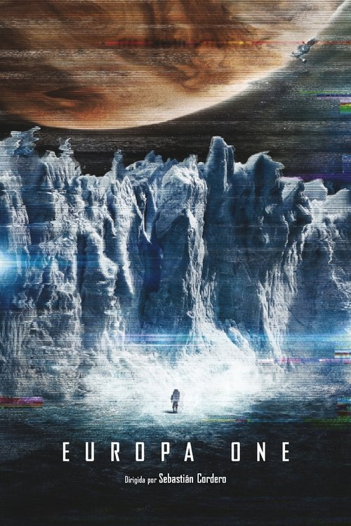

Europa One (2013)
Sinopsis Rápida
Una misión espacial privada a Júpiter se convierte en una lucha por la supervivencia cuando la tripulación se enfrenta a lo desconocido y a las limitaciones de su tecnología.
Sinopsis Detallada
Europa Report ofrece una experiencia cinematográfica realista y tensa, siguiendo a seis astronautas en una misión arriesgada hacia Júpiter para investigar la posibilidad de vida en Europa. Con una estética de metraje encontrado, la película aumenta la tensión y el suspense al documentar sus dificultades, descubrimientos y la aterradora amenaza que encuentran. La película explora temas sobre los riesgos y la recompensa de la exploración espacial, la resiliencia humana ante la adversidad y la naturaleza impredecible del universo.
¿Por qué tenés que verla?
- Una experiencia de ciencia ficción creíble y tensa, con una narrativa que te mantiene al borde de tu asiento.
- La estética de metraje encontrado crea una atmósfera de realismo y aumenta la tensión.
- Su enfoque realista en los desafíos de la exploración espacial la convierte en una película memorable e impactante.
- La película explora los límites de la tecnología humana frente a lo desconocido del espacio.
Idea Extra
Análisis comparativo de Europa Report con otras películas de ciencia ficción que usan la técnica de metraje encontrado.